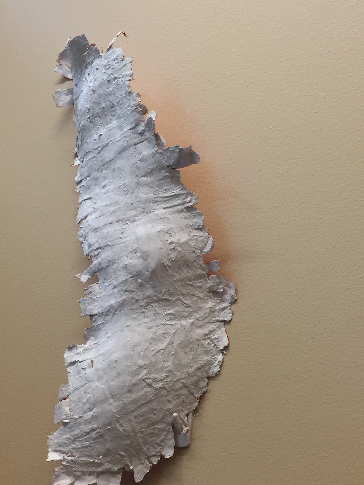
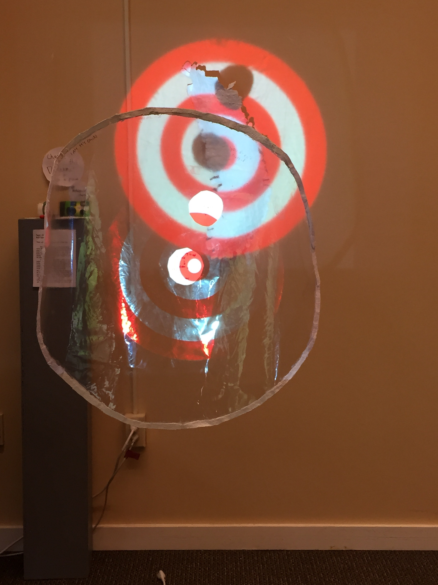
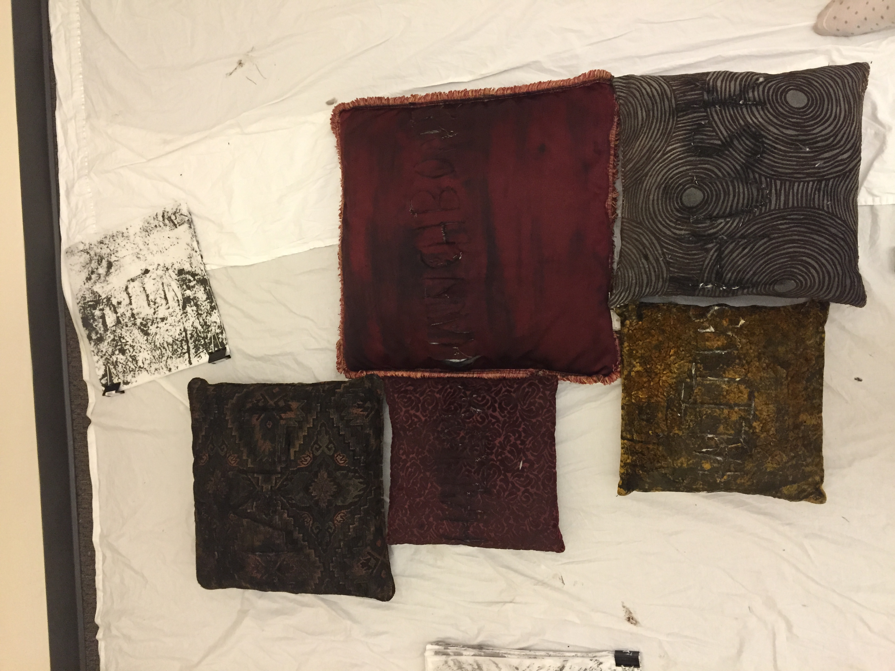
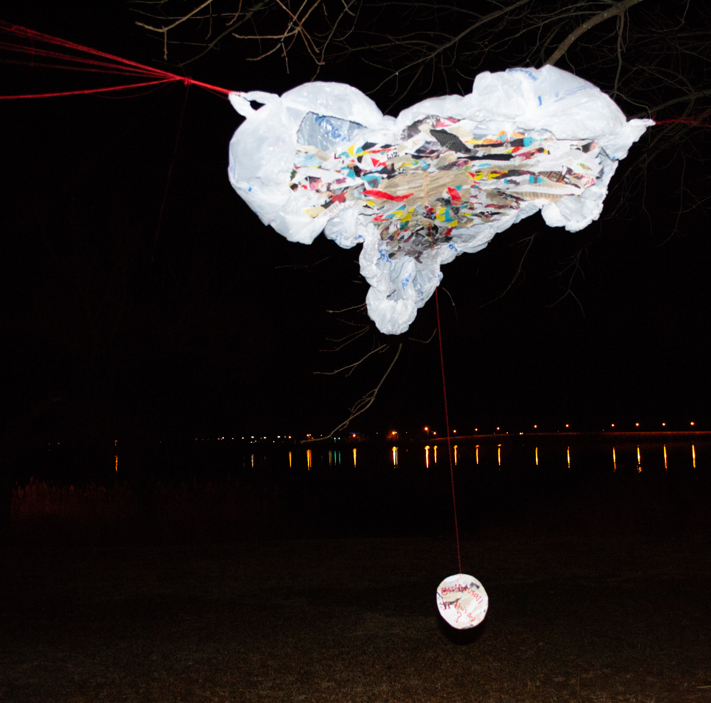
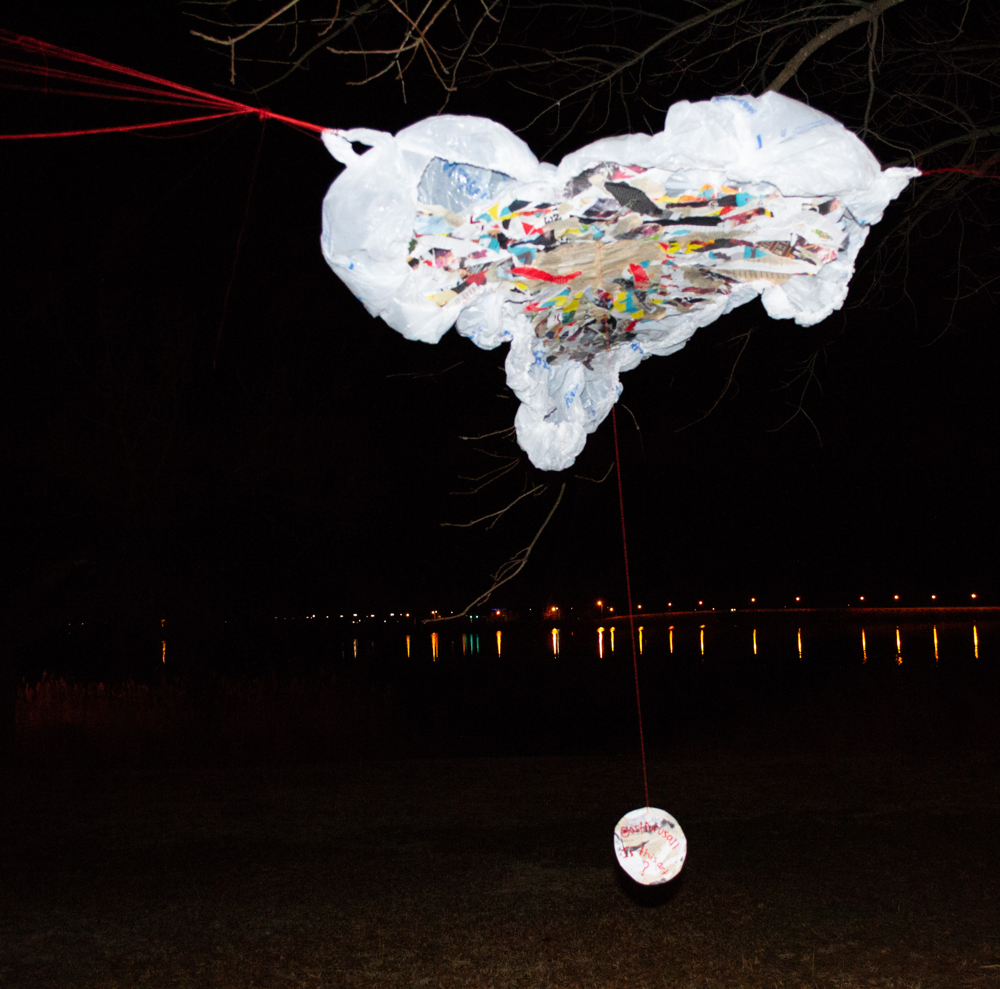

The following two images are from a mixed media piece I made during an exhibit at Reed College in 2016 to bring awarness to sexual assualt.
The first image is the abstracted plaster cast I made of my own body
The second image is from the exhibit, where there was a target projected through a clear "lens" with a matching plaster outline. There was a note that stated viewers should try to disrupt the narrative, and there were dry erase markers for the lens, and instant cameras to document their disruptions.
 These pillows were made into books by carving a single word into each pillow, then stamping the words onto paper of the size of each pillow repeatedly. The pages were then sewn inside the pillow. My intention was to reframe my perception of these pillows, and give them new meaning after traumatic associations with the objects previously present on my bed.
A list of the words carved: HALT; HALLOW; HAUNCHBONE; HALITUS; HUSK
 
